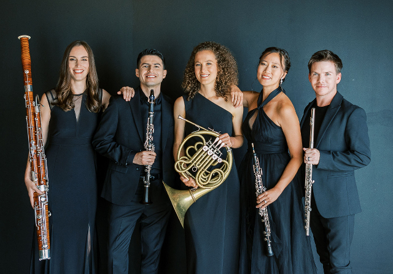
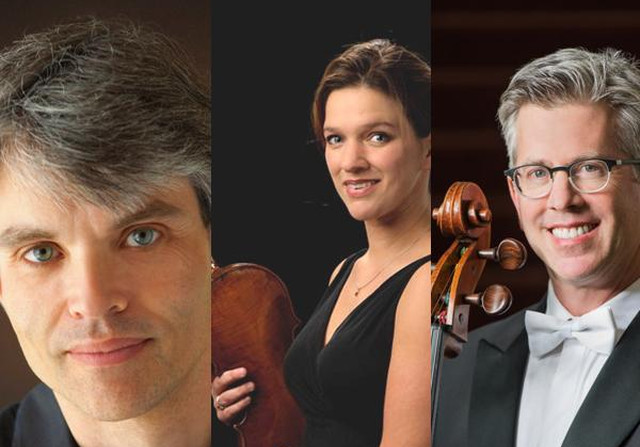
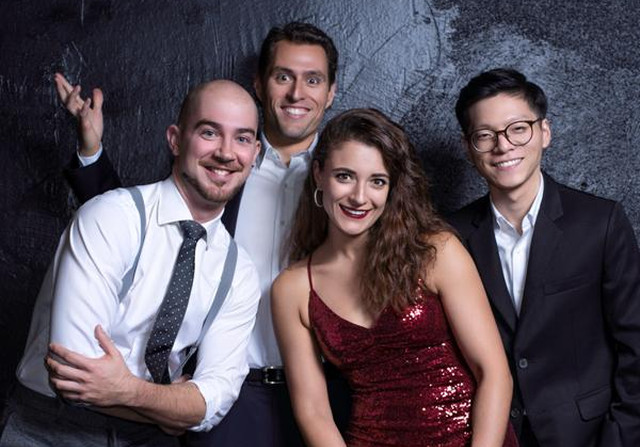
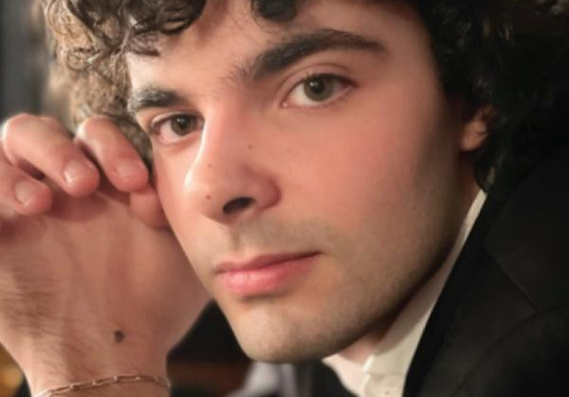

Fine chamber music for the Tri-Valley since
1978
Tickets to individual concerts may be purchased online, from the Bankhead Theater web site, or in person at the box office, 2400 First Street, Livermore, CA, tel: 925.373.6800.
The box office is open Tuesday through Saturday from noon to 6:00 PM, and on performance days starting 2 hours prior to performance time.

WyndSync
wind quintet
Saturday, October 15, 2022 7:30pm
Buy Tickets

Pawlik-Merks-Wyrick Piano Trio
piano trio
Saturday, November 19, 2022 7:30pm
Buy Tickets

Dover Quartet
string quartet
Saturday, February 4, 2023 7:30pm
Buy Tickets
 Musica Pacifica
Musica Pacifica
baroque ensemble
Saturday, March 18, 2023 7:30pm
Buy Tickets

Martin García García
piano
Saturday, April 29, 2023 7:30pm
Buy Tickets